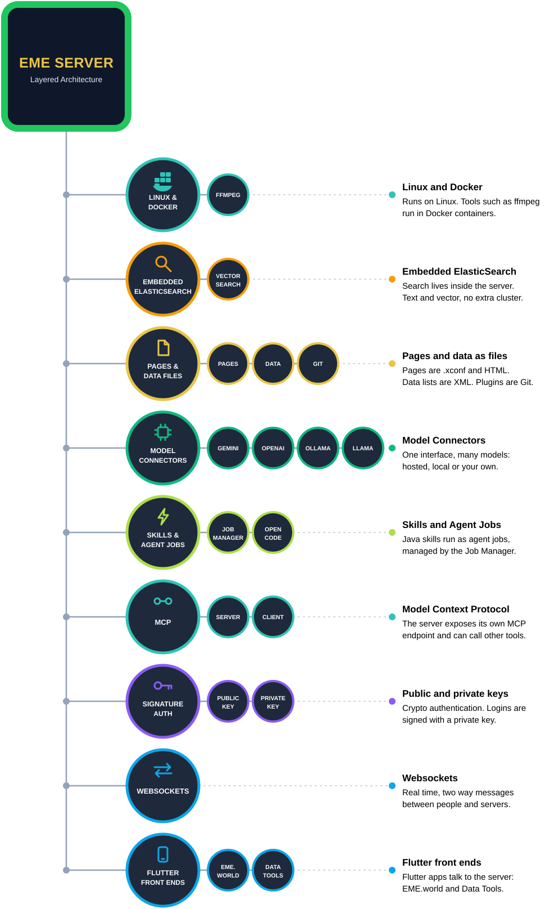
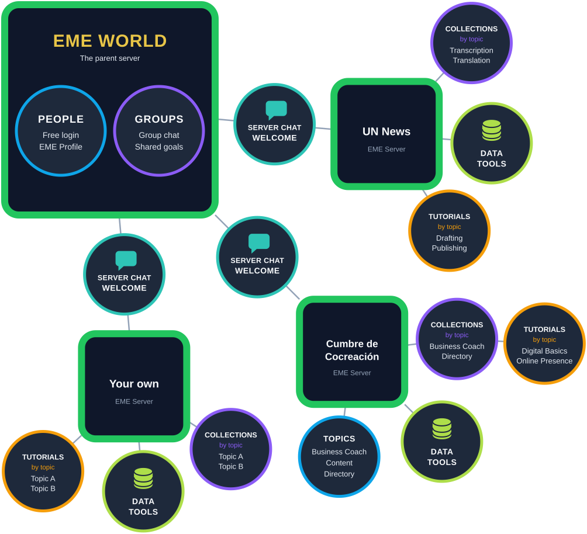

  <script type="application/ld+json">
  {
    "@context": "https://schema.org",
    "@type": "TechArticle",
    "headline": "EME Architecture: the parent server and its EME Servers",
    "description": "EME World is the parent server. It holds People and Groups. Each connected EME Server has its own Server Chat Welcome, Collections, Tutorials and Data Tools.",
    "inLanguage": "en",
    "about": ["EME World", "EME Server", "People", "Teams", "Collections", "Tutorials", "Data Tools", "Java", "Linux", "Docker", "ElasticSearch", "Model Context Protocol", "Websockets", "Flutter", "Public key cryptography"],
    "publisher": { "@type": "Organization", "name": "EME World", "url": "https://eme.world" }
  }
  </script>

<main>
    <section class="dev-hero compact">
      <div class="wrap">
        <span class="eyebrow">Architecture</span>
      </div>
    </section>

    <div class="band" style="padding-top:8px;">
        <div class="wrap arch">

          <figure class="architecture" id="inside">
            <header class="arch-head">
              <h1>Object Orientated Knowledge Management</h1>
              <p>Every EME Server is completely self contained. The only harness built this way.</p>
            </header>
            <a href="./overview/eme-object-architecture.svg" aria-label="Open the full size diagram"></a>
          </figure>

          <figure class="architecture" id="diagram">
            <figcaption><strong>EME World is the parent server.</strong> It holds the People and the Teams. Every EME Server connects to it and keeps its own Collections, Tutorials and Data Tools. A thick green border marks an EME Server.</figcaption>
            <a href="./overview/eme-world-parent-server.svg" aria-label="Open the full size diagram"></a>
          </figure>

        </div>
    </div>
  </main>
